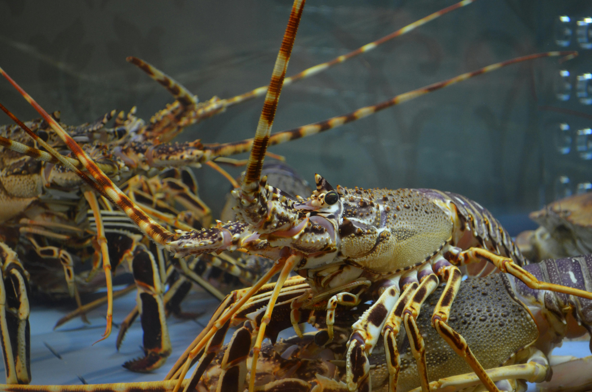

<!DOCTYPE html>
<html lang="en">
<head>
    <meta charset="UTF-8">
    <meta name="viewport" content="width=device-width, initial-scale=1.0">
    <title>ELYUCANO Crayfish</title>
    <!-- Primary favicon (32x32) with version to bust cache -->
    <link rel="icon" href="img/elyucano.png?v=2" type="image/png" sizes="32x32">
    <!-- Apple touch icon for iOS/Android homescreen -->
    <link rel="apple-touch-icon" href="img/elyucano.png?v=2">
    <link href="https://fonts.googleapis.com/css2?family=Poppins:wght@300;400;500;600;700&display=swap" rel="stylesheet">
    <link rel="stylesheet" href="style.css">
    <link rel="preconnect" href="https://fonts.googleapis.com">
<link rel="preconnect" href="https://fonts.gstatic.com" crossorigin>
<link href="https://fonts.googleapis.com/css2?family=Bebas+Neue&display=swap" rel="stylesheet">
</head>
   <style>
    @keyframes scalePulse {
      0%   { transform: scale(1); }
      50%  { transform: scale(1.1); }
      100% { transform: scale(1); }
    }

    .animated-button {
      display: inline-block;
      padding: 10px 20px;
      background-color: #4A90E2;
      color: white;
      text-decoration: none;
      border-radius: 5px;
      font-family: 'Arial', sans-serif;
      font-size: 16px;
      font-weight: 500;
      transition: all 0.3s ease;
      box-shadow: 0 4px 6px rgba(0, 0, 0, 0.1), 0 0 10px rgba(74, 144, 226, 0);
      position: relative;
      z-index: 1;
      overflow: hidden;
      animation: scalePulse 2s infinite; /* Add continuous scale animation */
    }

    .animated-button:hover {
      background-color: #357ABD;
      box-shadow: 0 6px 8px rgba(0,0,0,0.2), 0 0 15px rgba(74, 144, 226, 0.5);
    }
  </style>
<body class="dark-theme">

    <!--
      Accessibility & ARIA improvements:
      - All nav, header, and modal elements have ARIA roles and labels
      - All buttons have aria-labels and are keyboard accessible
      - See script.js for keyboard event handling
    -->
    <nav class="sidebar" aria-label="Main Navigation">
        <div class="sidebar-header">
            <h5 data-translate-key="eyucano_crayfish">EYUCANO Crayfish</h5>
        </div>
        <ul class="sidebar-menu">
            <li class="active"><a href="#"><i data-feather="home"></i><span data-translate-key="dashboard">Dashboard</span></a></li>
            <li><a href="#"><i data-feather="alert-triangle"></i><span data-translate-key="alerts">Alerts</span></a></li>
            <li><a href="#"><i data-feather="database"></i><span data-translate-key="data_logs">Data Logs</span></a></li>
            <li><a href="#" data-page="farm_location"><i data-feather="book"></i><span data-translate-key="farm_location">User Manual</span></a></li>
            <li><a href="#"><i data-feather="settings"></i><span data-translate-key="settings">Settings</span></a></li>
           
        </ul>
        <div class="sidebar-footer">
            <a href="#" id="logout-button" aria-label="Logout"><i data-feather="log-out"></i><span data-translate-key="logout">Exit</span></a>
        </div>
    </nav>

    <main class="main-content">
        <header class="main-header" role="banner" aria-label="Main Header">                             
            <div class="header-left">
                <button class="menu-toggle" aria-label="Open navigation menu" aria-controls="sidebar" aria-expanded="false" tabindex="0"><i data-feather="menu"></i></button>
                <h1 data-translate-key="dashboard_overview">Dashboard Overview</h1>
            </div>
            <div class="header-center-group">
                <div class="user-profile-container">
                    <div class="user-profile" style="display:flex;align-items:center;gap:1rem;">
                        <div class="crayfish-logo" id="expandable-logo" style="cursor:pointer;">
                            
                        </div>
                    </div>
                </div>
                <div class="about-toggle-container">
                    <button class="about-toggle" aria-label="About the Developers">
                        <i data-feather="info"></i>
                    </button>
                </div>
            </div>
        </header>
        <!-- Responsive header structure: clock centered, user logo right, about-toggle far right, all inline -->

        <div class="dashboard-grid">
            <div class="card overview-card">
                <div class="card-header">
                    <h2 data-translate-key="real_time_status">Real-Time Status</h2>
                </div>
                <div class="card-body">
                    <div class="status-item">
                        <div class="status-icon temperature">
                            <!-- Animated Thermometer SVG -->
                            <svg width="32" height="32" viewBox="0 0 32 32" fill="none" xmlns="http://www.w3.org/2000/svg" class="live-thermometer">
                                <rect x="13" y="6" width="6" height="16" rx="3" fill="#e0e0e0"/>
                                <rect class="mercury" x="15" y="14" width="2" height="8" rx="1" fill="#FF5252"/>
                                <circle cx="16" cy="26" r="6" fill="#FF5252"/>
                                <circle cx="16" cy="26" r="3" fill="#fff" fill-opacity="0.3"/>
                            </svg>
                        </div>
                        <div class="status-info">
                            <p data-translate-key="water_temperature">Water Temperature</p>
                            <h3></h3>
                        </div>
                        
                    </div>
                    <div class="status-item">
                        <div class="status-icon ph">
                            <!-- Animated Droplet SVG -->
                            <svg width="32" height="32" viewBox="0 0 32 32" fill="none" xmlns="http://www.w3.org/2000/svg" class="live-droplet">
                                <path d="M16 4C16 4 8 15 8 20C8 25.5228 12.4772 30 18 30C23.5228 30 28 25.5228 28 20C28 15 16 4 16 4Z" fill="#00BCD4"/>
                                <ellipse class="ph-wave" cx="18" cy="24" rx="6" ry="2" fill="#fff" fill-opacity="0.4"/>
                            </svg>
                        </div>
                        <div class="status-info">
                            <p data-translate-key="ph_level">pH Level</p>
                            <h3></h3>
                        </div>
                       
                    </div>
                    <div class="status-item">
                        <div class="status-icon oxygen">
                            <!-- Animated Oxygen SVG -->
                            <svg width="32" height="32" viewBox="0 0 32 32" fill="none" xmlns="http://www.w3.org/2000/svg" class="live-oxygen">
                                <circle cx="16" cy="24" r="6" fill="#4A90E2"/>
                                <circle class="bubble1" cx="12" cy="18" r="2" fill="#B3E5FC"/>
                                <circle class="bubble2" cx="20" cy="14" r="1.5" fill="#B3E5FC"/>
                                <circle class="bubble3" cx="16" cy="10" r="1" fill="#B3E5FC"/>
                            </svg>
                        </div>
                        <div class="status-info">
                            <p data-translate-key="dissolved_oxygen">Dissolved Oxygen</p>
                            <h3></h3>
                        </div>
                        
                    </div>
                    <div class="status-item">
                        <div class="status-icon turbidity">
                            <!-- Animated Turbidity SVG -->
                            <svg width="32" height="32" viewBox="0 0 32 32" fill="none" xmlns="http://www.w3.org/2000/svg" class="live-turbidity">
                                <ellipse cx="16" cy="24" rx="10" ry="6" fill="#B0BEC5"/>
                                <ellipse cx="16" cy="20" rx="8" ry="4" fill="#90A4AE"/>
                                <ellipse cx="16" cy="16" rx="6" ry="3" fill="#78909C"/>
                            </svg>
                        </div>
                        <div class="status-info">
                            <p>Turbidity</p>
                            <h3></h3>
                        </div>
                     
                    </div>
                </div>
            </div>

            <div class="card chart-card">
                <div class="card-header">
                    <h2 data-translate-key="parameter_trends">Parameter Trends</h2>
                    <div class="time-range-toggle">
                        <button class="active"> Live</button>
                    </div>
                </div>
                <div class="card-body">
                    <canvas id="trendsChart"></canvas>
                </div>
            </div>

            <div class="card alerts-card">
                <div class="card-header">
                    <h2 data-translate-key="recent_alerts">Recent Alerts</h2>
                    <div style="margin-left:auto; display:flex; gap:.5rem;">
                        <button id="view-all-alerts-btn" class="btn btn-primary">View All Alerts</button>
                    </div>
                </div>
                <div class="card-body">
                    <ul class="alert-list"></ul>
                </div>
            </div>

             
            <div class="card tips-card">
                <div class="card-header">
                    <h2 data-translate-key="system_guide">System Guide</h2>
                </div>
                <div class="card-body">
                    <p style="margin-top:0.2rem; font-weight:600;">Quick operational tips to keep your system healthy:</p>
                    <ul>
                        <li>Regularly monitor temperature, pH, and oxygen levels.</li>
                        <li>Perform partial water changes weekly.</li>
                        <li>Remove uneaten food to prevent ammonia spikes.</li>
                        <li>Ensure proper aeration at all times. (See &lt;attachments&gt; above for file contents. You may not need to search or read the file again.)</li>
                    </ul>
                </div>
            </div>

            <!-- New Card: Alternative Crayfish Foods -->
            <div class="card tips-card">
                <div class="card-header">
                    <h2 data-translate-key="alt_crayfish_foods">Alternative Crayfish Foods</h2>
                </div>
                <div class="card-body">
                    <ul>
                        <li data-translate-key="food_veggies">Blanched vegetables (zucchini, spinach, carrots)</li>
                        <li data-translate-key="food_pellets">Sinking fish or shrimp pellets</li>
                        <li data-translate-key="food_leaves">Dried Indian almond or oak leaves</li>
                        <li data-translate-key="food_frozen">Frozen bloodworms or brine shrimp</li>
                        <li data-translate-key="food_snails">Snails and other small invertebrates</li>
                    </ul>
                </div>
            </div>

            <!-- Get to Know: Crayfish -->
            <div class="card quick-access-card">
                <div class="card-header">
                    <h2>Get to Know: Crayfish</h2>
                </div>
                <div class="card-body">
                    <div class="get-to-know" style="display:flex;gap:1rem;align-items:flex-start;">
                        
                        <div style="flex:1;min-width:0;">
                            <p><strong>Overview:</strong> Crayfish (also called crawfish or freshwater lobsters) are small freshwater crustaceans found in streams, rivers, lakes and ponds. They play a key role in aquatic ecosystems as scavengers and prey for larger animals.</p>
                            <p><strong>Habitat:</strong> Prefer clean, well-oxygenated freshwater with hiding places such as rocks, logs, or aquatic plants. Substrate should allow burrowing for some species.</p>
                            <p><strong>Diet:</strong> Omnivorous — they eat detritus, plant matter, small invertebrates, and leftover fish food. Provide varied food: sinking pellets, blanched vegetables, and occasional protein treats.</p>
                            <p><strong>Care tips:</strong> Maintain stable water temperature (typically 180
